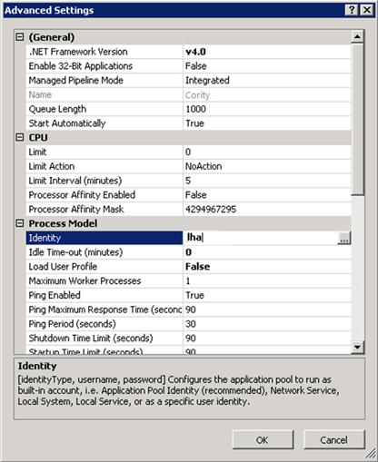

It is possible to use a trusted connection string when connecting to the Cority database.
In order to use a trusted connection, you must first create a valid user account and grant it permissions to the database.
Change the connection string in properties.config to something similar to the following:
Server=theDatabaseServer;Database=theDatabase;Trusted_Connection=Yes;
or
Server=theDatabaseServer;Database=theDatabase;Integrated Security=SSPI;
Modify the application pool to be run by the user who is granted access to the database:

Cority should now run using trusted authentication and the identity you have specified.